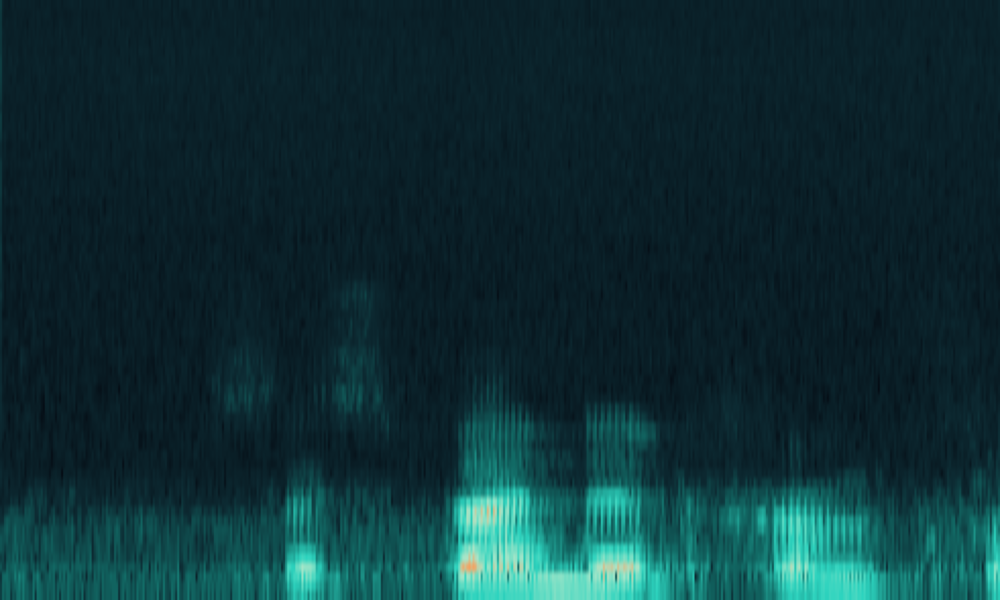
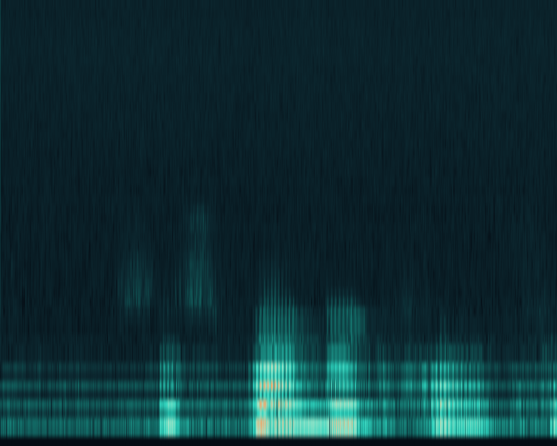
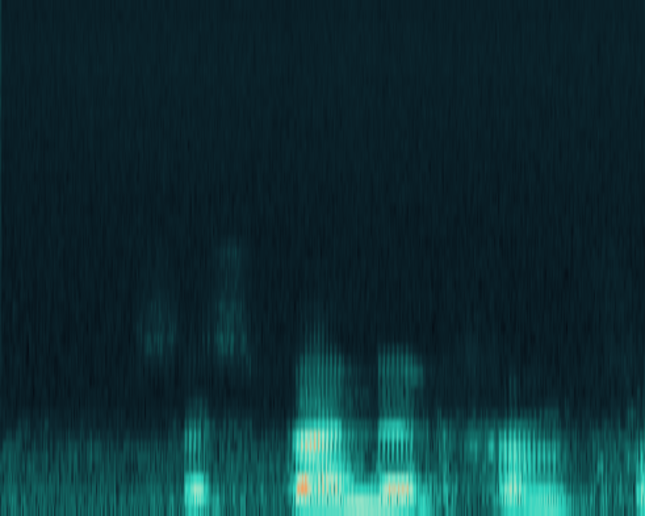
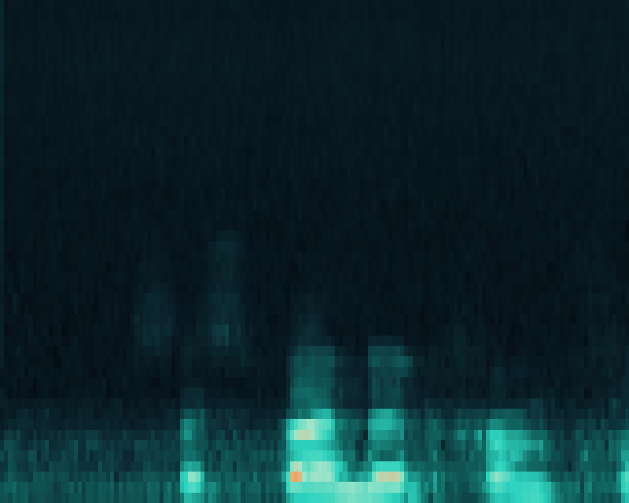
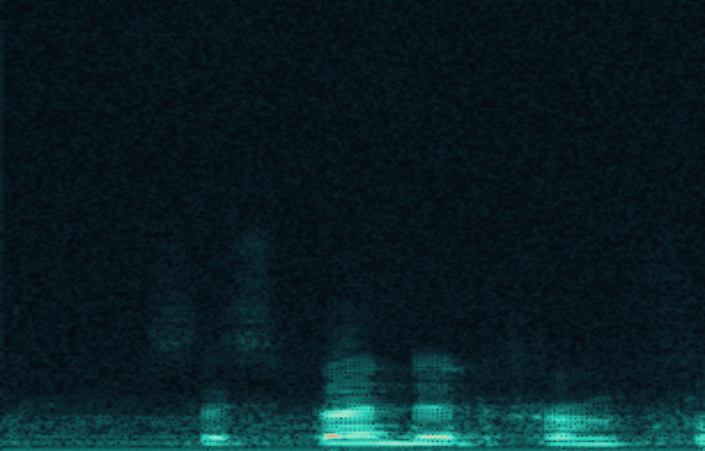

The theory behind the exercises — from raw waveform to species classifier
STFT / LOFARDEMONMatched FilterCNN / Transformer
Part 1 · Notebook 00
The Targets
What we're listening for, and why the split matters
Two Kinds of Acoustic Targets
Tonal call — e.g. baleen whale moan
Sustained, narrowband, low-frequency — a stable tone held over seconds.
Biosonar clicks — e.g. sperm whale / dolphin
Short, broadband, rhythmic pulses — literal biological sonar, used to hunt and navigate.
54
Species
15,248
Clips
1934–2001
Recording span
A Long Tail Spanning Three Orders of Magnitude
2,647× more clips
Killer whale (most-recorded) vs. harbour seal (single clip) — a genuine property of a 70-year opportunistic archive, not a preprocessing artifact.
Why Split by Recording, Not by Clip
Clips cut from the same original tape share a noise floor, a distance, an individual animal. A model can "recognize the recording" instead of the species.
clip_randomLeaky
TRAIN
TEST
Both tapes (teal / amber) appear on both sides — test clips can be near-duplicates of training clips.
tape_groupedHonest
TRAIN
TEST
Each tape's clips stay on one side — test performance reflects generalization to a new recording.
Part 2 · Notebook 01
Waveform → Spectrogram
Turning 1D pressure into a 2D image a model can see
The Short-Time Fourier Transform
1. Waveform
pressure vs. time
2. Slide a window
n_fft samples, hop apart
3. FFT each window
magnitude per frequency bin
4. Stack → spectrogram

freq
real clip · time →, color = energy
Window Length: a Real Trade-off, Not a Knob to Max
10ms window / 5ms hop

Fine time, coarse frequency — catches fast clicks, blurs tonal pitch.
25ms window / 10ms hop

Balanced — the speech-processing default this project starts from.
64ms window / 32ms hop

Fine frequency, coarse time — precise tonal pitch, blurs transients.
Mel Scale vs. Linear Frequency (LOFARgram)
Mel-scaled — what the CNNs/AST train on
low freq: spread outhigh: compressed
Harmonics warp and bunch together at higher pitch — a good prior for speech, debatable for physical tonals.
Linear frequency — LOFARgram, zoomed to 0–4kHz

evenly spaced, every recording
Tonal harmonics stay at a fixed row — easy to track by eye or algorithm, the classical starting point for passive-sonar target classification.
So Why Train Models on Mel, Not LOFAR?
Three practical reasons — not because mel is theoretically better for tracking tonal harmonics.
Transfer-learning fit — ResNet/EfficientNet expect ImageNet-like input; AST was pretrained on AudioSet's own log-mel features. Matching that cuts the domain shift.
Compact input — 64 mel bins vs. 500+ linear FFT bins across the same 8kHz. Keeps the CNN input small and tractable.
Dynamic range — log compression tames huge loudness swings into something closer to Gaussian, which trains and normalizes better.
open question
Mel is a speech-processing convention, not a proven-optimal choice here — it's what warps tonal harmonics off a fixed row on the previous slide. Does mel vs. linear actually move classifier accuracy? Nobody's tested it yet in this project (docs/next_steps.md).
Part 3 · Notebook 01
Classical Passive-Sonar Techniques
DEMON & matched filtering, applied to biosonar
DEMON: Reading a Click-Repetition Rate
DEmodulation of envelope On Noise — originally built to read a ship's propeller shaft rate off cavitation noise; here it reads a click train's own rhythm. Click through the five stages:
1. Click train
2. High-pass
3. Rectify
4. Low-pass envelope
5. FFT the envelope
Click train. A click train is broadband pulses fired at a steady rate. In the raw waveform, each click's own high-frequency content can hide the fact that the pulses themselves repeat periodically — that periodicity is what DEMON is built to expose.
High-pass. Filtering out low frequencies strips away clutter — flow noise, hull vibration, distant shipping — leaving mostly the broadband click energy. It's the same first step used to isolate propeller cavitation from a ship's own machinery tones.
Rectify. Full-wave rectification (absolute value) folds the negative half of the waveform onto the positive half. This is the actual demodulation step — it converts fast carrier oscillation into a slower amplitude pattern: a series of positive bumps.
Low-pass envelope. Low-pass filtering the rectified signal smooths away leftover high-frequency ripple, leaving a clean envelope that rises and falls with the click train's own rhythm — a hump for every click.
FFT the envelope. FFT of this envelope — not the original waveform — produces the DEMON spectrum. A sharp, isolated peak reads the pulse-repetition rate directly in Hz: for an echolocating animal, literally how many clicks per second, a number no ordinary spectrogram shows as a single value.
Matched Filtering: Detecting a Known Shape
A bank of three different reference templates (click, tonal wavelet, chirp) slides across a real hydrophone waveform. The correlation dot rides the response curve live, and the bank flashes amber exactly where a shape lines up.
Real clip (sperm whale, 61027002.wav), template bank searching across it
Correlation response, traced live
Loops continuously — three template shapes (click / tonal / chirp), one signal, one dot tracing the response.
Track-before-detect & ROC tuning Hits link into tracks; threshold set from a labeled ROC curve.
the honest gap
This project's matched_filter_bank covers #1's core math and a miniature #2 (four raw clips) — #3–#6 are real, scoped extension work.
Part 4 · Notebooks 02–04
Three Classifier Architectures
From-scratch CNN · ImageNet transfer · AudioSet transformer
Baseline CNN: the Floor Every Model Must Beat
log-mel input
conv·bn·relu maxpool ×4
avg
global avg pool
linear
classifier head
54
species
~403K parameters
No pretraining. If a bigger model can't beat this by a real margin, its extra complexity isn't earning its keep.
Transfer Learning: What Actually Transfers
Not "knowing what a dog looks like" — the low-level visual vocabulary (edges, textures, blobs) early layers learn, useful for any 2D signal with local structure.
Frozen backbone (linear probe)
pretrained backbone (untouched)
head trains (fast, cheap)
Fine-tuned
backbone nudges (small LR)
head trains (faster LR)
AST: Self-Attention Over Spectrogram Patches
Every patch attends to every patch, from layer 1
amber = query patch · teal = attended patches, anywhere in the image
CNN
Local receptive field — distant patches only interact after many stacked layers.
Transformer (AST)
Global from layer 1 — a click at t=0.1s can directly attend to a tonal at t=2.9s.
Pretrained on AudioSet (2M+ clips, general sound events) — closer domain than ImageNet, but still no underwater audio.
Part 5 · Notebook 05
Evaluating an Imbalanced Classifier
Why accuracy alone lies to you
The Imbalance Trap
shortcut model
Similar accuracy to a good model — but does well only on killer whale / sperm whale, and scores ~0 on most of the other 50+ species.
macro-F1
Unweighted average of per-class F1 — every species counts equally, so it exposes what accuracy hides.
Part 6 · Notebook 06
Robustness to Noise
From curated archive to a real, distant hydrophone
Degenerate "Robustness" vs. the Real Thing
watch for this
If aggregate accuracy stays high while rare-species accuracy collapses, the model isn't robust — it's just defaulting to the majority species. Illustrative curves, not measured.
The Theory, End to End
00 — imbalance & leakage-safe splits
01 — STFT, LOFAR, DEMON, matched filter
02 — from-scratch CNN baseline
03 — ImageNet transfer learning
04 — AST self-attention
05–06 — macro-F1 & noise robustness
Run the exercises in notebooks/ · extensions in docs/next_steps.md